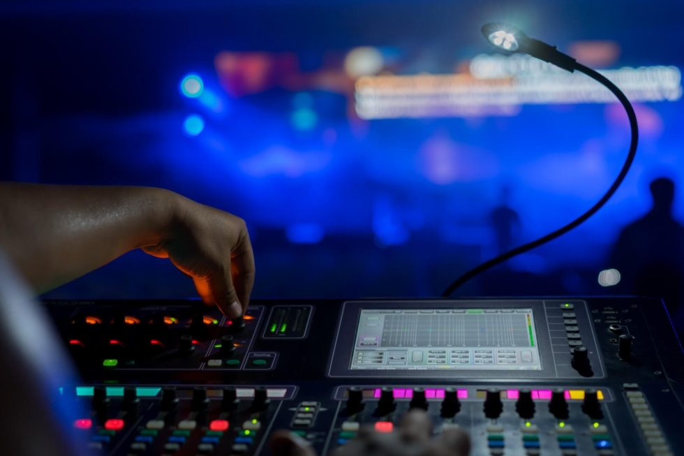
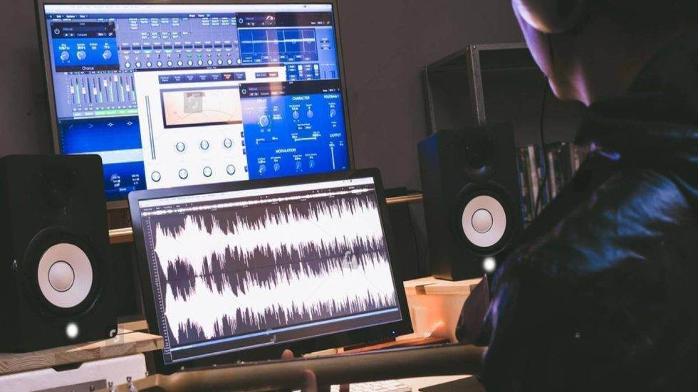
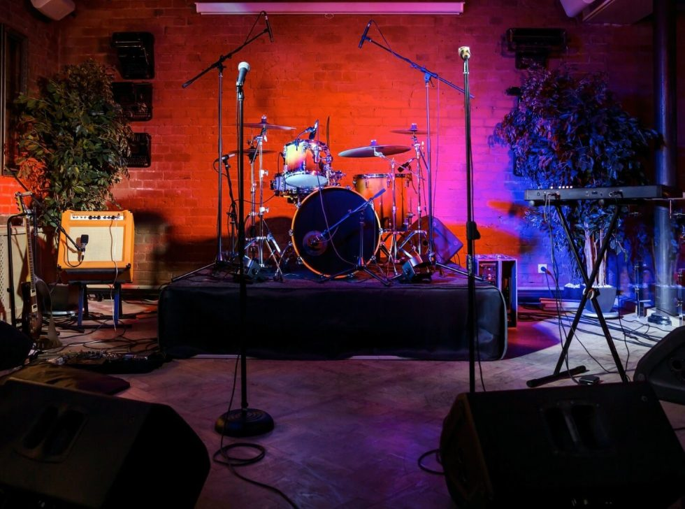

01
Τεχνική επιμέλεια μουσικών εκδηλώσεων
Παρέχουμε ηχητική και οπτικοακουστική υποστήριξη και φροντίζουμε τη διάταξη της σκηνής. Η πολυκάναλη ηχογράφηση επιτρέπει την ανεξάρτητη επεξεργασία κάθε οργάνου.
Αναλαμβάνουμε την τεχνική επιμέλεια του ήχου σε ζωντανές μουσικές εκδηλώσεις, καθώς και ενορχήστρωση, ηχογράφηση και μουσική παραγωγή.
Συζητήστε την παραγωγή σας
Οι ανάγκες, η ομάδα και τα παραδοτέα καθορίζονται βάσει των απαιτήσεων κάθε έργου.
Παρέχουμε ηχητική και οπτικοακουστική υποστήριξη και φροντίζουμε τη διάταξη της σκηνής. Η πολυκάναλη ηχογράφηση επιτρέπει την ανεξάρτητη επεξεργασία κάθε οργάνου.

02Συνεργαζόμαστε με επαγγελματίες ενορχηστρωτές, μουσικούς και στούντιο για την παραγωγή τραγουδιών και άλμπουμ, καθώς και για την ηχογράφηση μεμονωμένων οργάνων.

03Επιλέγουμε και διαμορφώνουμε κατάλληλο χώρο, ώστε να αποτυπώνεται ο ζωντανός χαρακτήρας της μουσικής. Το υλικό μπορεί να αξιοποιηθεί για προβολή και επαγγελματική παρουσίαση.
Για vidcasts, ζωντανές μουσικές ηχογραφήσεις και γυρίσματα με σκηνικά, καθορίζουμε τις ανάγκες χώρου και εξοπλισμού βάσει της παραγωγής. Οι διαθέσιμες επιλογές και οι τεχνικές προδιαγραφές επιβεβαιώνονται πριν από τον προγραμματισμό.
Πείτε μας για την παραγωγή και τις ανάγκες σας. Θα επικοινωνήσουμε μαζί σας για να συζητήσουμε τα επόμενα βήματα.